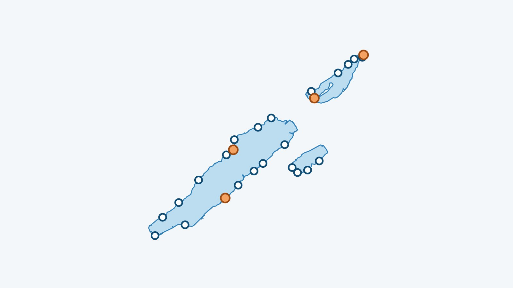

In breve
Per un bagno invernale nei laghi di Neuchâtel, Bienne o Morat, la Società Svizzera di Salvataggio dà una regola semplice: non più minuti in acqua di quanti gradi ha. Il mio lago mostra l’acqua del giorno davanti a ogni spiaggia dei tre laghi e censisce 4 saune in riva all’acqua per riscaldarsi.
Quanto restare in acqua?
La Società Svizzera di Salvataggio dà una regola semplice per l’acqua fredda: non restare in acqua più minuti di quanti gradi ha l’acqua. L’acqua del momento è indicata più sotto. Da leggere prima: i primi 90 secondi in acqua fredda e come riscaldarsi dopo.
Dove fare il bagno?
Ecco le spiagge dei tre laghi seguite da Il mio lago, ognuna con la sua pagina (acqua, vento, giudizio). Prima di partire verifica che l’accesso sia aperto: alcuni lidi chiudono fuori stagione e non abbiamo questa informazione spiaggia per spiaggia.
Lago di Neuchâtel
- Yverdon-les-Bains
- Grandson – Corcelettes
- Yvonand
- Concise
- Saint-Aubin
- Cortaillod
- Boudry
- Colombier
- Neuchâtel – Jeunes-Rives
- Hauterive
- Cudrefin
- Portalban
- Gletterens
- Forel
- Estavayer – Nouvelle Plage
Lago di Bienne
Lago di Morat
Riscaldarsi: le saune in riva all’acqua
Lago di Neuchâtel
- Les Rives Zen, Estavayer-le-Lac, vicino a Estavayer – Nouvelle Plage: Sauna a legna e bagno freddo in riva al lago di Neuchâtel: 25 franchi per 2 ore, 35 franchi per 3 ore, al massimo 16 persone.
- Les P’tits Baigneurs, Boudry, vicino a Boudry: Sauna a botte a legna sulla spiaggia di Boudry, fino a 6 persone, su prenotazione, in inverno.
Lago di Bienne
- Saunafloss Erlach, Erlach, vicino a Cerlier (Erlach): Zattere-sauna a legna ormeggiate all’imbarcadero di Erlach sul lago di Bienne: poi dritti nel lago. Su prenotazione.
- Saunaboot Biel, Bienne (Vingelz), vicino a Bienne – Plage: Barca-sauna sul lago di Bienne, gestita da Joran-Biel (Neuenburgstrasse 72, fermata del bus Räblus Vingelz).
Schede verificate l’11 novembre 2026. Orari, prezzi e stagioni cambiano: il link di ogni sauna porta al suo sito, da consultare prima di partire.
L’acqua dei tre laghi in questo momento
La temperatura dell’acqua di ogni spiaggia è nell’app Il mio lago, aggiornata ogni tre ore.
Avvertenza. Questo articolo fornisce informazioni generali tratte dalle fonti citate; non sostituisce il parere di un medico. Fare il bagno in acqua fredda sollecita molto il cuore e può essere pericoloso: chiedi consiglio a un medico prima di iniziare, in particolare in caso di problemi cardiaci, pressione alta o gravidanza. Non fare mai il bagno da solo e segui le indicazioni dei bagnini. Ognuno pratica a proprio rischio; in caso di emergenza, chiama il 144 in Svizzera o il 112.